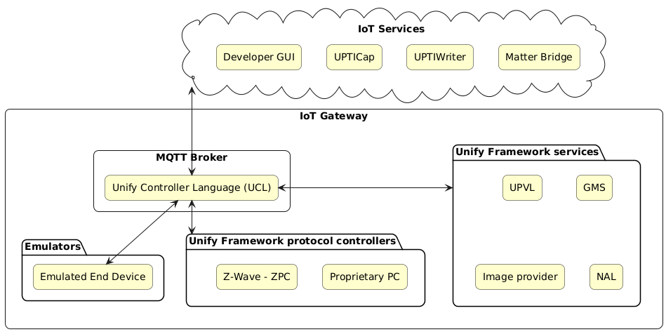

Unify Framework
Introduction
The Unify Framework provides software source code and binary packages for Raspberry Pi 4 to help build an IoT gateway product. The Unify Framework enables an IoT service to control and manage end nodes in several wireless PHY radios (e.g., Z-Wave, Zigbee, and so on) supported by Silicon Labs. The Unify Framework uses the Unify Controller Language (UCL) as an internal abstraction layer to seamlessly control various end nodes that are enabled with multiple wireless PHY radios. The detailed architecture of the Unify Framework is described in the Unify Framework Specification.
The Unify Framework uses Unify Framework library to decouple API modules from the PHY drivers. This facilitates code reuse and enables easily adding new high-level APIs without the need to modify the PHY drivers. The library provides a number of components that simplify the task of writing a PHY driver also known as a Protocol Controller.
Systems Overview
A Unify gateway consists of a Message Queuing Telemetry Transport (MQTT) broker and a number of MQTT clients. The Unify Framework uses the Mosquitto MQTT broker.
The following diagram shows the overview of System with Unify Applications and their groupings and relation with other Unify Applications or MQTT broker.

The Unify Framework was previously known as Unified IoT Controller or UIC for short. The old name can still be found in some parts of the Framework.
Unify Applications Overview
The Unify Framework contains the following applications:
Unify Framework Protocol Controllers
The Unify Framework currently includes the following protocol controllers:
Z-Wave Protocol Controller (ZPC)
ZigBee Protocol Controller (ZigPC)
Angle of Arrival/Departure Protocol Controller (AoXPC)
Each protocol controller interfaces with its radio hardware and implements a translation between its own wireless protocol and the Unified Command Language (UCL), which is defined in the Unify Framework Specification. In addition, these protocol controllers implement best practices regarding message delivery and adherence to regulatory requirements. Protocol-specific implementation details can be found in the user guide for each protocol controller.
The Unify Framework Services
Following services facilitate different functionalities in cooperation with the Protocol Controller.
The Unify Framework Provisioning List (UPVL)
The UPVL serves the SmartStart Provisioning list to perform SmartStart Security 2 (S2) inclusions and maintains the ucl/SmartStart MQTT topic.
The Unify Framework Group Manager (GMS)
GMS manages groups and bookkeeping between protocol controllers and also publishes group state changes to the ucl/by-group MQTT topic.
The Unify Name and Location service (NAL)
NAL is a helper MQTT component that allows for book-keeping of text names and locations that have been assigned. This functionality allows IoT Services to assign and read back a Name and a Location for each node/endpoint.
The Unify Framework OTA Image Provider
OTA Image Provider announces OTA images available in OTA storage and publishes OTA binary on request.
The Unify AoX Positioning Application
AoX Positioning application reads configuration and data from AoXPCs and publishes the calculated position of asset tags in the system.
The UPTICap
UPTICap (upti_cap) is an application to communicate with Silicon Labs WSTK adapters. The adapters capture data on the debug channel and publish the captured data as MQTT messages. Application provided strictly for test and demonstration purposes only and is not suitable for production.
The UPTIWriter
UPTIWriter (upti_writer) is an application to receive trace packages captured with UPTI_CAP application and save them to a file in Network Analyzer compatible format. Application provided strictly for test and demonstration purposes only and is not suitable for production.
IoT Services
Developer UI
Matter Bridge
The dev_gui service is a graphical user interface provided for operating and provisioning IoT devices using UCL. The dev_gui can be used as a reference for basic Unify concepts, such as device provisioning and control. The user interface is provided strictly for test and demonstration purposes only and is not suitable for production.
Matter Bridge (UMB) The Unify Matter Bridge is a Unify IoT Service that enables interaction with Unify devices from a Matter fabric.
Overview of relations among Unify Applications
The Unify Framework consists of several applications including Protocol Controllers, IoT Services (e.g. Developer GUI, UPTICap) and multiple application services that facilitate various functionalities such as SmartStart Provisioning, Group Management, Name and Location Service and OTA Image Provider.
Please read the Unify Framework User guide for details on configuring and running Unify Framework applications.
Please read the Unify Build Guide for details on building the Unify Framework.
The following table presents the relationship amongst Unify Framework applications and the Unify Protocol Controllers. If a given component is supported via a Protocol Controller, it will be marked as [x].
| ZPC | ZigPC | AoXPC | |
|---|---|---|---|
| UPVL | [x] | [x] | |
| GMS | [x] | [x] | |
| NAL | [x] | [x] | [x] |
| OTA Image Provider | [x] | [x] | |
| Dev GUI | [x] | [x] | [x] |
| UPTICap | [x] | [x] | |
| UPTIWriter | [x] | [x] | |
| AoX Positioning | [x] |
Overview of communication among Unify Framework Applications
All individual Unify applications communicate via MQTT. In this reference implementation, the Mosquitto MQTT broker is used which does not support clustering. As a result, all nodes connect to a single central broker.
MQTT implements a publisher-subscriber model, where all payloads are published to topics to which zero, one, or many clients can subscribe to. By default, publishers can publish to any topic and all subscribers can subscribe to any topic. MQTT has the notion of access-control but that functionality is currently not used by Unify.
A publisher does not get notified (by the broker) if a subscriber has received its message. All QoS functionality is handled by the broker.
MQTT has the notion of message-retention, i.e., a message can be retained on a topic and delivered to any future subscribers. Only a single message is retained on a given topic at a time. Publishing an MQTT-message with an empty (zero bytes) payload to a topic will clear its previously retained message.
In Unify, all message payloads are JSON-objects. Some of the Unify topics (e.g., commands) may not require any data, but they will require at least an empty JSON object (e.g., {}).
Unify Framework Release Notes
The Unify Framework release notes can be found on GitHub.
Unify Framework Developer Guides
The developer guides for the Unify Framework includes the Unify Developer Guide and the Unify Library Overview.
Resources
- Unify Specifications
- 1. Unify Architecture Overview
- 2. Dotdot ZCL in Unify Framework for Application Level Control
- 3. Network Management Commands
- 4. Scenario mapping to specific PHYs: Z-Wave, BLE and ZigBee
- 5. Common OTA FW Update Service
- 6. Service Discovery
- 7. Scene Cluster and the Scene Table
- 8. AoX Application
- 9. Binding
- 10. Name and Location Service
- 11. System Metrics
- 12. Unify Applications Monitoring
- Known Abbreviations